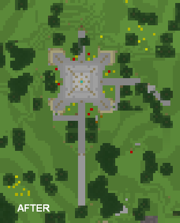

The Eiffel Tower in Minecraft
For four long nights in mid-October 2010, I was wholly consumed with a construction project in the game "Minecraft." It is a 1/5 scale replica of the Eiffel Tower in a private Minecraft multiplayer server. You can find photos and videos at the links below. The rest of this page introduces Minecraft and describes how the tower was designed and built. Enjoy!
UPDATE Jan 3rd, 2011: The tower is now real! Through the use of a program called Mineways, I received a 3D printed version of the tower. Have a look at the video here, and some photos here.

Short Video Tour
Video Tour: Part 1, Part 2, Part 3
Photo gallery / slideshow
CraftHub gallery listing
3D printed (real!) version
What is Minecraft?
Minecraft is a computer game that randomly generates infinite worlds made up of cubic blocks of various materials, with each block being 1x1x1 meter. There are rules that govern how the world works, but no set goals. Generally you mine the materials from the world, combine ("craft") them into blocks, and place each block in the world to build structures, all using an in-game character that moves like it would in a first-person shooter game. You can play in worlds on your own computer, or with other players on multiplayer servers.
There is more to it than that, including monsters that can get in the way, but I refer you to a few sites that describe it in more detail:
- Wikipedia
- Minecraft wiki
- Rock, Paper, Shotgun
- Penny Arcade comics here and here
A crafting example from the Minecraft wiki.
The game has become quite popular over the past few months. The single Swedish programmer who is developing it has it has over 400,000 paying customers and has made over five million dollars on it so far. And it is only in an "alpha" state!
From my perspective, I find that it appeals to that part of you that loves LEGO, model trains, or building sand castles and pillow forts. I also find it very liberating to be limited to cubes, which sounds ironic. If I had more elaborate or complex tools to build with, the learning curve would discourage me from building something interesting. Only having cubes, I feel much more inclined to dive in and start building.
Idea and Design
The idea for this project came me as I was thinking of my LEGO models, and which ones might be fun to replicate in Minecraft. One such model is indeed the Eiffel Tower (LEGO #10181). Since it is composed mostly of 1x1x1 bricks, I thought I could duplicate it in Minecraft easily just by following the LEGO instructions. However, I found that it is about 110 bricks tall, which would be difficult to build in a Minecraft world. Minecraft allows blocks to be placed up to 64 blocks above and below "sea level," where the world below sea level is almost entirely solid blocks. So while I could laboriously dig down and build a structure up to 128 blocks tall, the bottom half would likely be obscured by surrounding terrain.
I abandoned the idea of basing it on the LEGO model, but the structure still appealed to me because it is has roughly square and symmetrical cross sections along its vertical extent, making it easy to represent with cubes. (Round shapes are harder to faithfully represent.) I decided I would build a replica that sat at sea level, and reach the ceiling, thus being exactly 64 blocks tall. This picture illustrates how I went from the original plans at the Eiffel Tower web site to a set of blocks I could replicate in Minecraft.
The main goal was getting it to look right (form), but a secondary goal was making it accessible in the game (function). To that end, there is a series of internal ladders that you can take all the way to the top floor, and each of the three viewing platforms were adjusted to accommodate players. In particular, in order to support the two-meter player height, the top floor is larger in the model that it otherwise would be.
Location
The Minecraft world I play in is called Vokselia, which is hosted on a private server with about a dozen players. Vokselia is filled with a number of interesting attractions, many of which are documented in this photo album and these video tours on YouTube. I wanted to build the tower where it would be likely to be seen, ideally near the spawn point where characters first appear. The hard part was finding an area that was also near sea level and that wasn't very obscured, as noted above.
Before I joined the world, a large sand pit near the spawn point had been mined clean in order to make a giant glass dome (another attraction), and this otherwise unused space made for a perfect location.
Construction
It should first be noted that this was built without any cheating or automation. Whatever is possible in the unmodified multiplayer alpha "survival" mode is what I used: mining, crafting, and assembly is all done by hand. Due to bugs (or features?) of the multiplayer mode, characters are invulnerable and tools don't get damaged, unlike the single-player mode.
I used a local copy of the world to build a prototype. The prototype was used to validate the design, and only about a quarter of the full tower was built. I originally used cobblestone as the main material. After building the prototype, I decided that steps (half-blocks) would look much better and allow for more subtle adjustments to the shape. However, it would require twice as much stone: two pieces of stone to make a full-size block.
See below for an early construction picture and site maps before and after construction.


Most of the stone was mined from a smooth, vertical pit I developed below the tower plaza. Based on the volume of the pit, I estimate that about 3,000 stone blocks were mined to build the tower.
Conclusion
Last but not least, I decided to call this "L'Effie Tower." (read it backwards)
Thanks for reading! You can reply to the thread at the Minecraft forums if you have any questions or comments about this.
— Mauricio
October 27th, 2010